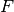

IndicatorBox¶
-
class
odl.solvers.functional.default_functionals.IndicatorBox(*args, **kwargs)[source]¶ Bases:
odl.solvers.functional.functional.FunctionalIndicator on some box shaped domain.
Notes
The indicator  with lower bound
 and upper bound
and upper bound
 is defined as:
is defined as:- Attributes
adjointAdjoint of this operator (abstract).
convex_conjConvex conjugate functional of the functional.
domainSet of objects on which this operator can be evaluated.
grad_lipschitzLipschitz constant for the gradient of the functional.
gradientGradient operator of the functional.
inverseReturn the operator inverse.
is_functionalTrueif this operator’s range is aField.is_linearTrueif this operator is linear.proximalReturn the
proximal factoryof the functional.rangeSet in which the result of an evaluation of this operator lies.
Methods
_call(self, x)Apply the functional to the given point.
bregman(self, point, subgrad)Return the Bregman distance functional.
derivative(self, point)Return the derivative operator in the given point.
norm(self[, estimate])Return the operator norm of this operator.
translated(self, shift)Return a translation of the functional.
-
__init__(self, space, lower=None, upper=None)[source]¶ Initialize an instance.
- Parameters
- space
LinearSpace Domain of the functional.
- lower
space.fieldelement orspaceelement-like, optional The lower bound. Default:
None, interpreted as -infinity- upper
space.fieldelement orspaceelement-like, optional The upper bound. Default:
None, interpreted as +infinity
- space
Examples
>>> space = odl.rn(3) >>> func = IndicatorBox(space, 0, 2) >>> func([0, 1, 2]) # all points inside 0 >>> func([0, 1, 3]) # one point outside inf